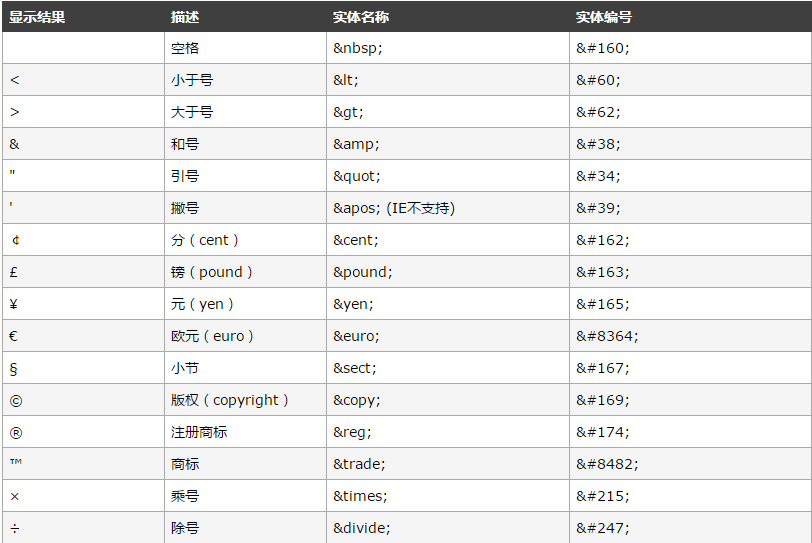

display:inline
inline 也是css1提出的属性，她主要用来设置行内元素属性，设置了该属性之后设置高度、宽度都无效，同时text-align属性也无效，但是设置了line-height会让inline元素居中。
同时从上图可以看到两个inline标签之间 出现了奇怪的间隔，改间隔的原因是div 换行产生的换行空白，解决的办法是
- 将两个inline标签写到一行
none 是css1 就提出来的属性，将元素设置为none的时候既不会占据空间，也无法显示，相当于该元素不存在。该属性可以用来改善重排与重绘，同时我也经常用它来做模糊窗等效果。
同时从上图可以看到两个inline标签之间 出现了奇怪的间隔，改间隔的原因是div 换行产生的换行空白，解决的办法是
var person = {
firstName:"Bill",
lastName:"Gates",
age:50,
eyeColor:"blue"
}
<div class="glyphicon-scissors">dddd</div>
使用<code></code>代码插入一行代码，使用<pre></pre>标签才能显示换行和空白.注意只有使用字符实体才能正确的显示标签。 常用的有一下几种。  如需完整的实体符号参考，请访问 HTML 实体符号参考手册。
inline-block CSS 2.1 新增的属性。 inline-block既具有block的宽高特性又具有inline的同行元素特性。 通过inline-block结合 text-align: justify 还可以实现固定宽高的列表两端对齐布局。